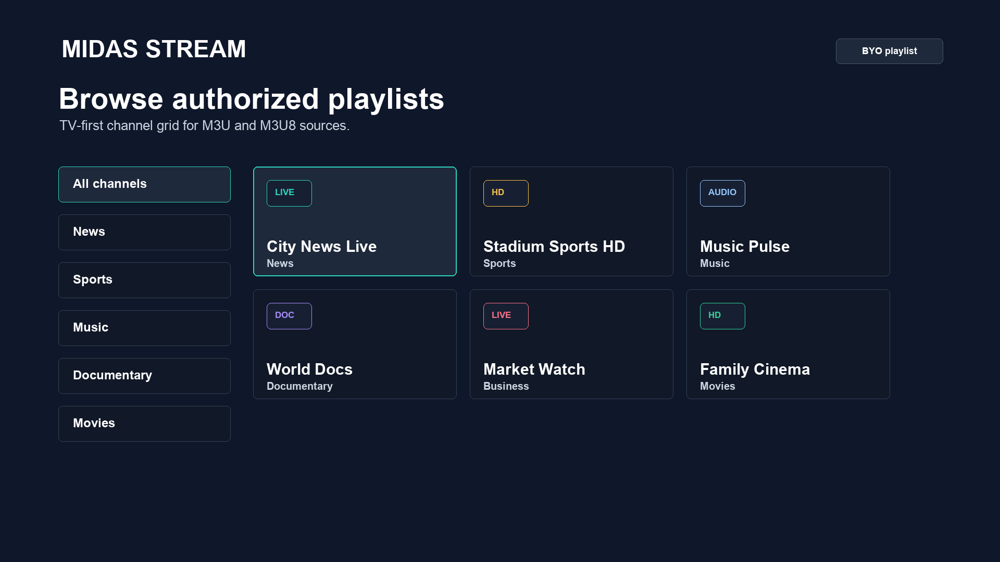
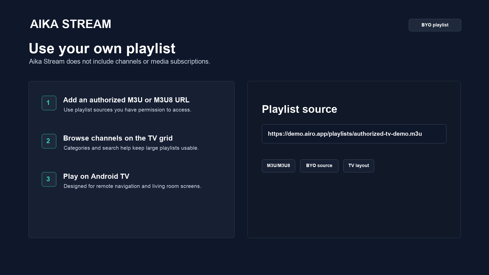
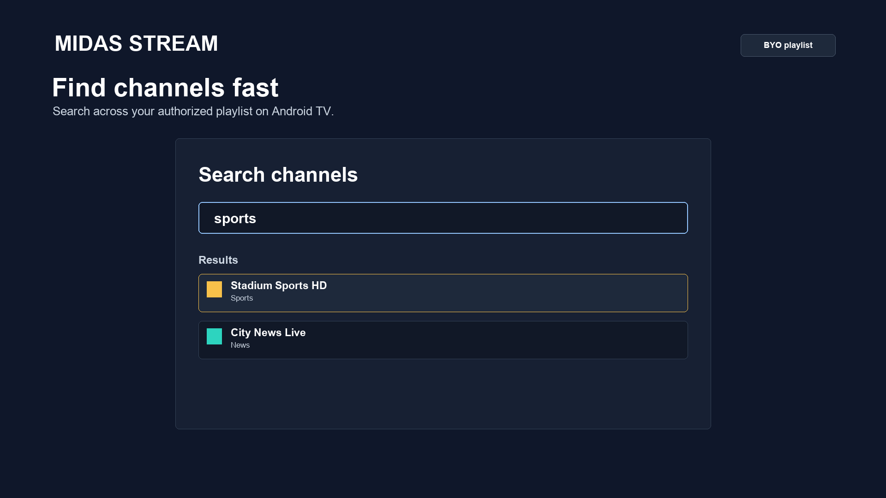
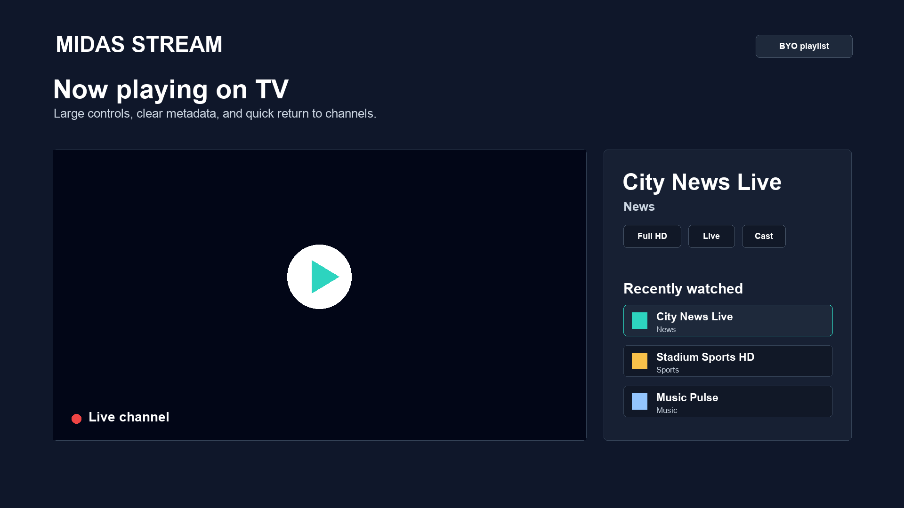

Available
Search loaded channels
Type a channel name and search the playlist already on your device instead of scrolling every row.
Use searchBorn from Airo v0.0.4 available
Your sources. Your screen.
A remote-first player for M3U and M3U8 media sources you are authorized to use. Airo TV includes no channels, playlists, subscriptions, or media catalog.

Vevo Pop is a public HLS listing. When the muted preview starts, your browser connects directly to the operator, which may serve advertising, apply regional limits, or change availability. Airo does not host, proxy, cache, transcode, copy, or rebroadcast the channel.
Muted preview starts when this hero is on screen.
Browse your way
Start with the source you trust. Airo TV makes the direct path useful today, then develops local organisation and clearer playback answers in public—without turning your playlist into a catalogue.
Type a channel name and search the playlist already on your device instead of scrolling every row.
Use searchMark or unmark a channel from browse and player surfaces; your favorites remain local to the device.
Use favoritesUse smart-playlist rules and canonical channel matching to keep your locally organized view useful after a re-import.
See roadmapBounded retries and playback diagnostics explain an unavailable source without pretending Airo TV can repair it.
Troubleshoot playbackWhy Airo TV
Set up a source you are allowed to use, find what you want to watch, and play it on the screen in front of you. The product keeps its content boundary explicit instead of pretending to be a provider.
Airo TV does not sell, recommend, unlock, host, or bundle content.
AvailableSearch a loaded playlist by channel name.
AvailableAndroid TV is the current release profile; device status remains visible rather than assumed.
AvailableDiscovery and control depend on receiver reachability and a usable local network.
AvailableThe product journey
Every screen below uses sanitized Airo TV release artwork with neutral demo data. It illustrates the product journey, not a content catalog.

Add an authorized M3U or M3U8 URL. The app does not provide a playlist for you.
TV-sized hierarchy and visible focus keep browsing readable at living-room distance.

Find a channel by name instead of scrolling through every group.

Play supported streams and use Cast controls where the sender, receiver, and network support the connection.
Device support
Availability is tied to the published v0.0.4 release and its known limitations. The status is part of the product—not fine print.
Direct-install release APKs and a Play Store AAB are published for the TV profile.
AvailableSetup guideCompatible APK path; dedicated qualification remains required.
Setup guideControls depend on local network discovery and receiver reachability.
Supported pathCast guideZIP and DMG artifacts are unsigned and not notarized; use them as validation/direct-download evidence.
Install guideDeferred for the current v2 release wave.
DeferredStatus guideBrowser use is validation-only, not a public Airo TV release artifact.
Validation onlyLearn moreCapability matrix
Airo TV v0.0.4 adds local organization, guide setup, and clearer playback answers without turning the player into a content service.
User-supplied M3U playlists and M3U8 streams, subject to source and device codec support.
Search loaded channels by name.
Mark channels as favorites locally from browse and player flows.
Local rules and canonical channel matching help preserve a personal view across source refreshes.
Add an authorized XMLTV source and receive bounded, clearer playback-recovery states.
Airo TV does not record and does not run cloud playlist storage.
Guides
Start with the short guide hub, then use the device-specific steps and troubleshooting path when you need them.
Install, add an authorized source, browse, search, and play.
Use the compatible APK safely and understand experimental status.
Check the network, receiver, VPN, and discovery path.
Separate source, network, decoder, guide, and device problems.
Community Voice
Worker processing and virtualized browsing for real-world playlist sizes.
Implementation evidenceUseful programme-guide states, timelines, and clear missing-data behaviour.
Issue #825Additional adapters without turning Airo TV into a content provider.
Issue #823Clear diagnostics and bounded recovery rather than a blank screen.
Issue #805Advanced TV capabilities are being tested under the Airo TV Pro name. They are not included in the public Airo TV release and carry no delivery promise until public evidence is published.
Explore more useful source cleanup and organization.
Explore health-informed source handling and bounded recovery outcomes.
Explore guide and reminder outcomes behind explicit release boundaries.
The path forward
The public roadmap makes current release work, qualification, and future direction visible without hiding their different states.
The current focused player release with local search, favorites, XMLTV setup, smarter playlist organization, and Android TV artifacts.
Release notesSaving a reusable browse view remains planned product work; it is not an available Airo TV v0.0.4 feature.
View product milestonePhone-hosted media streaming remains under real-device receiver qualification; it is not a general availability promise yet.
Track qualificationNative parsing, indexing, storage, networking, and measured device budgets.
View milestoneAdvanced outcomes remain under explicit disclosure and release gates.
Trust before features
Airo TV is a player for playlists and streams you are authorized to access. It does not provide, host, sell, endorse, verify, or distribute television channels, playlists, subscriptions, or media catalogs.
Local-first means local where the product can be local. Remote sources and Cast still use a network, and the guide explains that boundary clearly.